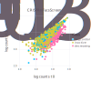
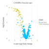

Tutorial
The easiest way to use Crispulator is via the command line config file. If this format is too constraining, the Custom Simulations has a detailed walk- through of writing a custom simulation where each step can be modified according to need.
Graphical overview
The simulation is laid out in the following manner:

Getting started
First, navigate to the Crispulator directory.
You can find the directory by running
$ julia -e 'import Crispulator; println(normpath(pathof(Crispulator), "..", ".."))'There should be a YAML file called example_config.yml. Open this is in a text editor and it should look like this
# This is an example configuration file. Whitespace is important.
# Settings pertaining to the library design
library:
genome:
num-genes: 500
num-guides-per-gene: 5
frac-increasing-genes: 0.02 # fraction of genes with a positive phenotype
frac-decreasing-genes: 0.1 # fraction of genes with a negative phenotype
guides:
crispr-type: CRISPRn # either CRISPRi or CRISPRn
frac-high-quality: 0.9 # fraction of high quality guides
mean-high-quality-kd: 0.85 # mean knockdown by a high quality guide (CRISPRi only)
screen:
type: facs # either facs or growth
num-runs: 10 # how many independent runs
representation: # integer value, how much larger are samples than the library
- transfection: 100
- selection: 100
- sequencing: 100
# screen-type specific parameters
bin-size: 0.25 # size of tail to sample from, must be between 0 and 0.5 (FACS only)
std-noise: 1 # (FACS only)
num-bottlenecks: 10 # (Growth only)This gives access to most dials in the simulation, if something is missing than see Custom Simulations.
Now, lets remove all genes that have a positive phenotype by changing line 8 to 0.0:
frac-increasing-genes: 0.0 # fraction of genes with a positive phenotypeRunning simulation
Now, we can actually run the code by executing the following command
julia run.jl config example_config.yml test_outputHere config tells CRISPulator to use the provided config example_config.yml and test_output is the directory where the results will be saved. This directory will be created if it doesn't exist.
The output should look like
[ Info: Activating simulation environment
Activating project at `~/work/Crispulator.jl/Crispulator.jl`
[ Info: Instantiating environment
Activating project at `~/work/Crispulator.jl/Crispulator.jl`
[ Info: Loading simulation framework
[ Info: Directory test_output does not exist, attempting to create
[ Info: Using 1 thread(s)
[ Info: Parsing config
[ Info: Running config
[ Info: Analyzing results
[ Info: Saving results in test_output
Quick results:
##############
Venn score = 0.995, 95% conf int (0.984, 1.007)
AUPRC score = 0.919, 95% conf int (0.898, 0.94)
SNR score = 3.877 +/- 0.355The test_output/ directory should now be populated with all the files
counts.svg
results_table.csv
volcano.svgOutput
The folder contains one of the raw count scatterplots (left) and a volcano plot of mean log2 fold change versus significance of each gene (right)
 
It also has a useful table that contains all the summary statistic information.
| Row | method | measure | genetype | std_score | mean_score | conf_max | conf_min | n |
|---|---|---|---|---|---|---|---|---|
| String7 | String7 | String15 | Float64 | Float64 | Float64 | Float64 | Int64 | |
| 1 | venn | inc | sigmoidal | NaN | NaN | NaN | NaN | 10 |
| 2 | auprc | inc | sigmoidal | NaN | NaN | NaN | NaN | 10 |
| 3 | venn | dec | sigmoidal | 0.0 | 1.0 | 1.0 | 1.0 | 10 |
| 4 | auprc | dec | sigmoidal | 0.0331847 | 0.962345 | 0.98942 | 0.935271 | 10 |
| 5 | venn | incdec | sigmoidal | 0.0 | 1.0 | 1.0 | 1.0 | 10 |
| 6 | auprc | incdec | sigmoidal | 0.0493142 | 0.935642 | 0.975876 | 0.895408 | 10 |
| 7 | venn | inc | linear | NaN | NaN | NaN | NaN | 10 |
| 8 | auprc | inc | linear | NaN | NaN | NaN | NaN | 10 |
| 9 | venn | dec | linear | 0.0 | 1.0 | 1.0 | 1.0 | 10 |
| 10 | auprc | dec | linear | 0.0238588 | 0.939321 | 0.958787 | 0.919855 | 10 |
The table below describes each column
| Column Name | Meaning |
|---|---|
method | Which summary statistic was used (e.g. Crispulator.auprc) |
measure | Whether the score is only for increasing genes (inc), decreasing (dec) or both (incdec). Allows independent evaluation on which type of genes the screen can accurately evaluate. |
genetype | Whether the score is for linear, sigmoidal, or all genes (see Crispulator.KDPhenotypeRelationship). Helps determine if CRISPRn or CRISPRi is better for this design. |
mean_score | Average score |
std_score | Standard deviation in scores |
conf_max | Upper limit of 95% confidence interval |
conf_min | Lower limit of 95% confidence interval |
n | Number of independent replicates |
Experiments from the paper
This repository also includes a collection of experiments that were run for the paper. You can view the full list by running
julia run.jl lsThey are located in the exps/ directory and also listed here for convenience:
| Experiment File |
|---|
| compare_methods.jl |
| facs_binning.jl |
| facs_binning_snr.jl |
| gen_plots.jl |
| growth_bottleneck_snr.jl |
| growth_bottlenecks.jl |
| growth_representation.jl |
| growth_sensitivity_library.jl |
| scan_rep_space.jl |
You can run them as follows:
julia run.jl exp growth_sensitivity_library.jl output.csvwhere the simulation result will be saved to output.csv.
Many of the experiments are quite computationally expensive so I recommend using Multiprocessing to accelerate the process.